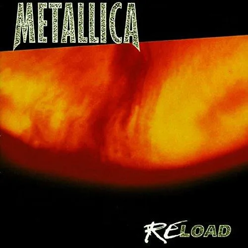

Discografía

Kill 'Em All
- Publicación: 25 de julio de 1983
- Grabación: 10 al 27 de mayo de 1983: Music America Studios, (Rochester, Nueva York)
- Duración: 51:20
- Productor: Paul Curcio
- Discográfica: Megaforce Records

Ride Te Lightning
- Publicación: 27 de julio de 1984
- Grabación: Febrero - Marzo de 1984: En Sweet Silence Studios, (Copenhague, Dinamarca)
- Duración: 47:24
- Discográfica: Megaforce Records
- Productor: Flemming Rasmussen

Master Of Puppets
- Publicación: 3 de marzo de 1986
- Grabación: Septiembre - Diciembre de 1985: En (Copenhague, Dinamarca)
- Duración: 54:44
- Discográfica: Elektra Records
- Productor: Flemming Rasmussen
...And Justice For All
- Publicación: 7 de septiembre de 1988
- Grabación: Enero - Mayo de 1988: En One on One Recording de (Los Ángeles, California)
- Duración: 65:15
- Discográfica: Elektra Records
- Productor: Flemming Rasmussen

Black Album
- Publicación: 12 de agosto de 1991
- Grabación: Octubre de 1990 - junio de 1991: En One on One Recording de California
- Duración: 62:31
- Discográfica: Elektra Records
- Productores: Bob Rock, Hetfield, Ulrich

Load
- Publicación: 4 de junio de 1996
- Grabación: Mayo de 1995 - febrero de 1996 en "The Plant Studios", Sausalito, (California)
- Duración: 78:59
- Discográfica: Elektra Records
- Productores: Bob Rock, Hetfield, Ulrich

Reload
- Publicación: 18 de noviembre de 1997
- Grabación: Mayo de 1995 - agosto de 1997 en "The Plant Studios", Sausalito (California)
- Duración: 75:56
- Discográfica: Elektra Records
- Productores: Bob Rock, Hetfield, Ulrich

St. Anger
- Publicación: 5 de junio de 2003
- Grabación: mayo de 2002 - abril de 2003 en "HQ de San Rafael", (California)
- Duración: 75:01
- Discográfica: Elektra Records
- Productores: Bob Rock, Metallica

Death Magnetic
- Publicación: 12 de septiembre de 2008
- Grabación: marzo de 2007 - mayo de 2008 en "HQ de San Rafael", (California)
- Duración: 74:46
- Discográfica: Warner Bros. Records
- Productor: Rick Rubin

Hardwire... to Self-Destruct
- Publicación: 18 de noviembre de 2016
- Grabación: Mayo de 2015 - agosto de 2016 en "HQ de San Rafael", (California)
- Duración: 77:33
- Discográfica: Blackened Recordings
- Productor: Greg Fidelman , Hetfield, Ulrich